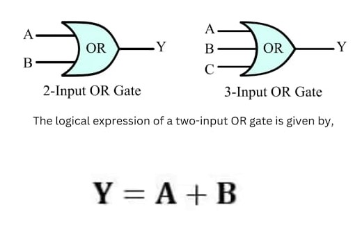
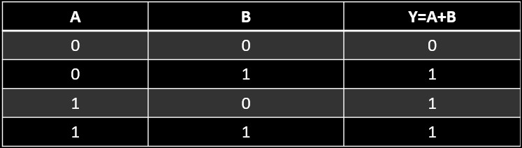

OR GATE
An OR gate is a digital logic gate that gives an output of 1 when any of its inputs are 1, otherwise 0. An OR gate performs like two switches in parallel supplying a light, so that when either of the switches is closed the light is on.
Logic Diagram:
Truth Table:
